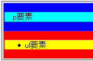
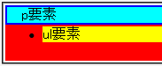

widthプロパティやheightプロパティにauto以外の値を指定した要素の子孫に、デフォルトでマージンがある要素（p, blockquote, ulなど）があるとき、デフォルトのマージンが消えることがある。
p要素
p要素とul要素でマージンの設置状態を確認しています。p要素やul要素のボックスの上下に1emずつ、青色や赤色の領域が設置されるはずです。
Netscape7.1標準モード
WinIE6.0標準モード
制作者や閲覧者がスタイルシートを用いて指定したマージンは正しく設置されます。
<div style="width:50%; padding:2px; background:blue;"> <p style="background:aqua; margin:1em 0;">p要素</p> </div> <div style="width:50%; padding:2px; background:red;"> <ul style="background:yellow; margin:1em 0 1em 40px;"> <li>ul要素</li></ul> </div>
p要素